Persistence in Event-Driven Architecture
Samir Halilčević
Marvelsoft, 2019-10-17
Hello
- Samir Halilčević, programmer,
- been at Marvelsoft for about one year,
- main tasks are the content of this presentation,
- not alone, work of multiple great people
What is ‘Event-Driven’ anyway?
- Events are the driving force in the app,
- Everything that happens is a reaction to some outside action
- Application sleeps until something interesting happens
Network event
- Classic approach
char[] buffer
loop {
// sleep(10ms)
if socket.try_read(buffer) {
do_work(buffer)
}
}
Network event
- Event driven approach
let f = socket.into_future().and_then(do_work)
reactor.start(f)
DISCLAIMER
- There are a thousand ways to do event-driven,
- and a hundred ways to do persistence!
- This is just our take on things…
How we approached it:
don’t communicate by sharing memory; share memory by communicating.
Rob Pike
- All events are messages,
- Messages flow through the system,
- Only messages induce state changes.
How to detach it to threads?
class State {
handle(string s) {
println(s)
}
}
let state = State::new()
for line in stdin.lock() {
state.handle(s)
}
How to detach it to threads?
let state = State::new()
let mailbox = Queue::new()
Thread::new(|| {
for line in stdin.lines() {
mailbox.push(line)
}
});
Thread::new(|| {
for msg in mailbox.next() {
state.handle(msg)
}
});
Queue == Mailbox?
- Mailbox = Queue with multiple write points, one read point,
- Thread blocks until a message arrives,
- The state of the object is handled only in one thread.
And we have created an actor
- Actor = state + mailbox
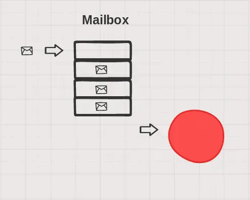
And we have created an actor
- Actor = state + mailbox
- Actors basically boil down to state machines
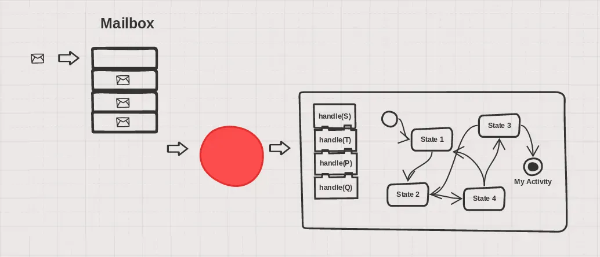
What can an actor do?
- An actor can receive a message, and send a message,
- An actor can spawn another actor
Actor architecture benefits
- Simple concurrency,
- Simple state management,
- Maxes out performances,
- Value-based data model,
- All state changes are local.
How we did ‘event-driven’ in the end?
How did it end up?
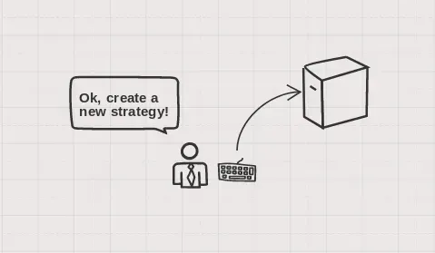
How did it end up?
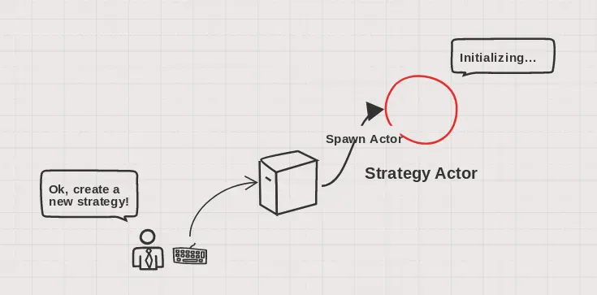
How did it end up?
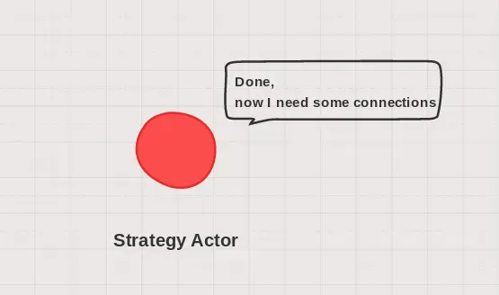
How did it end up?
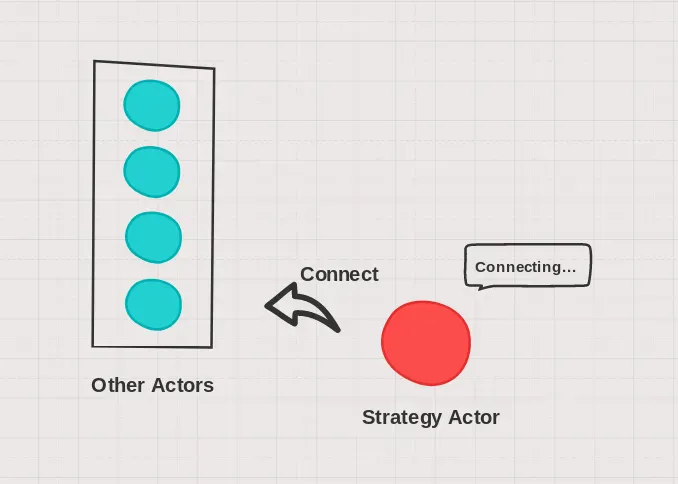
How did it end up?
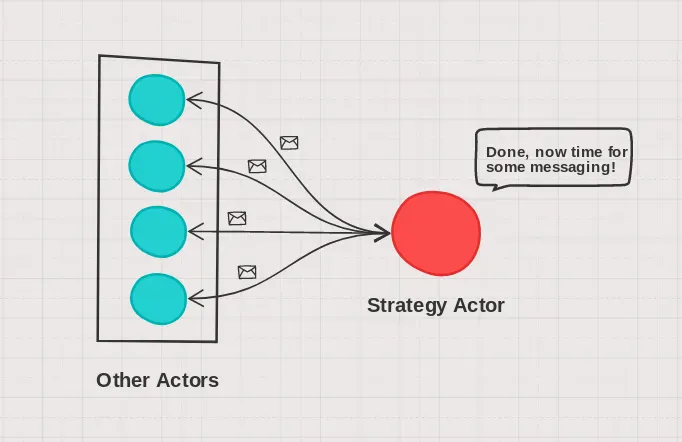
How did it end up?
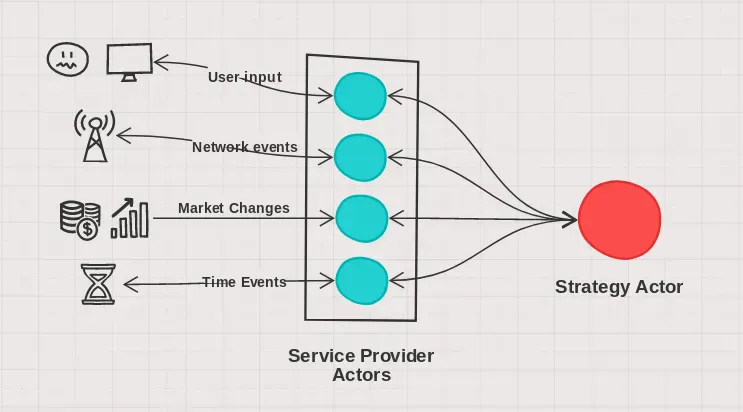
How did it end up?
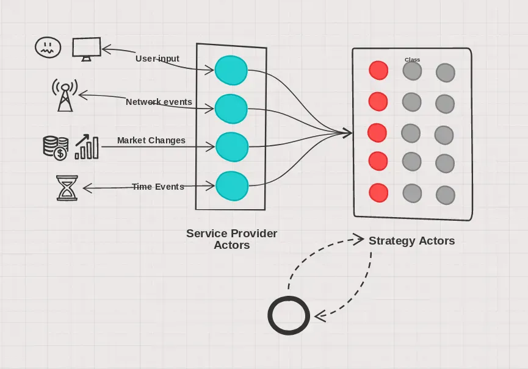
How we did ‘event-driven’ in the end?
- All state is kept in small, bite-sized pieces inside actors,
- All state changes happen on message receiving,
- All outside events are converted into messages by service actors.
- A Known number of actors provide services to other actors,
- An Arbitrary number of strategy actors, which communicate only with service actors.
Everything was going well util…
we need to implement persistence!
- Nothing was persisted,
- No idea how to start
- ORM or not?
Spoiler
What can go wrong if we just reproduce the messages to the actor?
Sequential consistency of messages
If the stream of messages stays the same will state changes in the actor stay the same?
Sequential consistency of messages
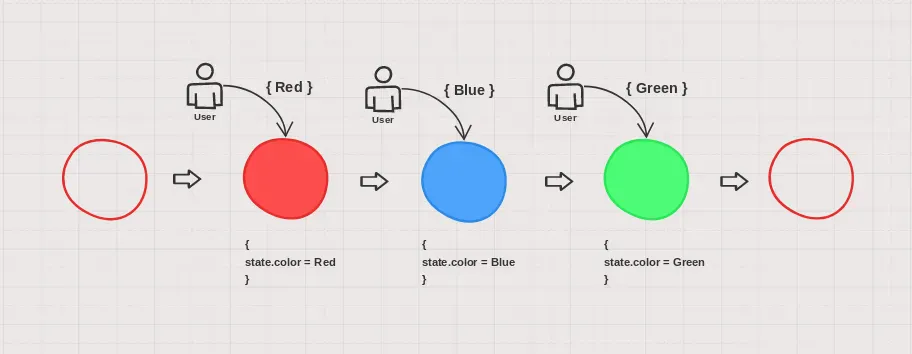
Sequential consistency of messages
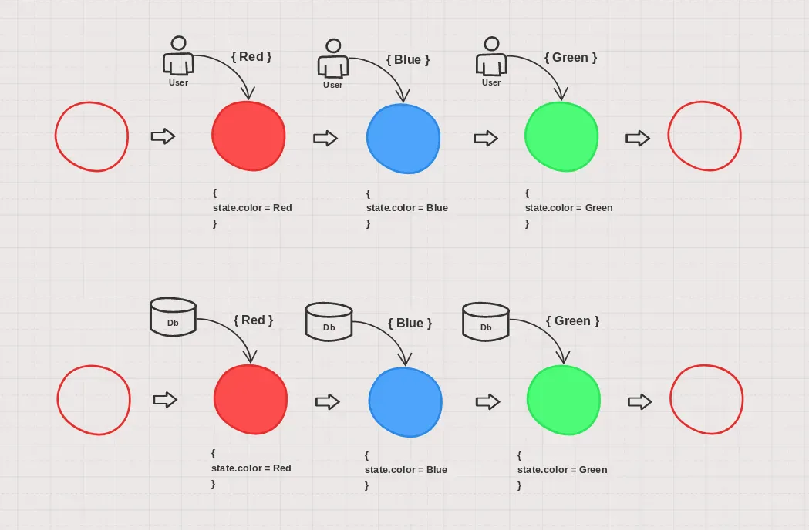
Anyhow, what affects the actor’s state?
- Initial state (that is what we spawn)
- Messages, since its birth to the shutdown
- Impure system calls
The initial state
Suppose that the same arguments for construction will be the same in the initial run and the rebuild run.
The messages
Insert a database hook to every message handle
receive() {
while msg = mailbox.next() {
state.handle(msg)
}
}
The messages
Insert a database hook to every message handle
receive() {
while msg = mailbox.next() {
state.handle(msg)
db.store(msg)
}
}
Database structure

Database structure
- A database store after every message handle,
- Every actor has its own uuid,
- After the message is handled, the database stores uuid, time and a serialized message.
Database read
- Another component that handles reading
- Actor that responds with all your previous events
- Handles many reads in parallel
Database structure
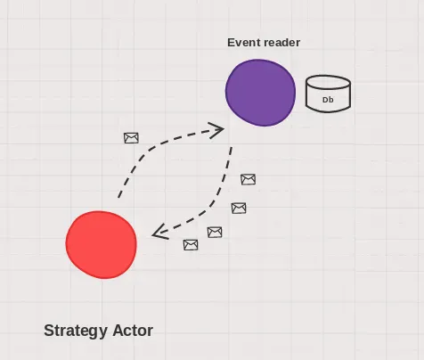
Database
- We chose an embedded database
- RocksDB - key/value database, facebook
- Append only use case, no deletes or modifies
- Sequential read, usually one pass through everything at the start of the program
How to handle side effects
Side effects include
- Time
- Random numbers
- Messages sent to other actors
Problems with time
- One run starts in the morning,
- Lets say at noon we restart the application.
- All calls to getTime are wrong!
Problems with time
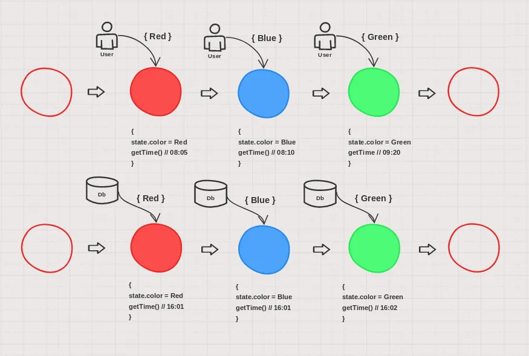
How we solved it
- Introduce time service,
- Store the arrival time of every message,
- Fake the time during rebuild.
Message handling
During the normal run
receive() {
while msg = mailbox.next() {
msg.time = time.now()
state.setTime(msg.time)
state.handle(msg)
db.store(msg)
}
}
Message handling
During the rebuild run
receive() {
while msg = mailbox.next() {
state.setTime(msg.time)
state.handle(msg)
}
}
Problems with randomness
Every time we call a random number, different random number is returned.
Problems with randomness
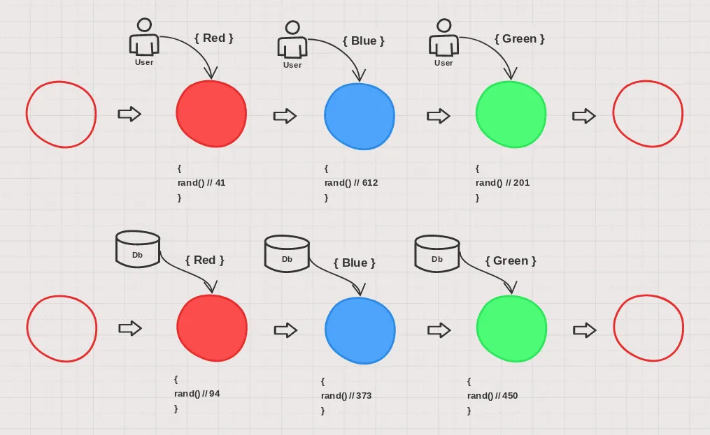
How we solved it
- Every actor has it’s own random number generator,
- Set the seed upon actor spawn,
- If the seed is the same, then the sequence of random numbers are the same.
Actor spawning
Before:
spawn(args...) {
let mailbox = Mailbox::new()
let state = State::new(args...)
reutrn mailbox
}
Actor spawning
After:
spawn(uuid, args...) {
let mailbox = Mailbox::new()
let state = State::new(args...)
state.randomGenerator.setSeed(uuid)
reutrn mailbox
}
Sending messages
- Actor
Agets a message, and as a result sends a message to it’s buddyB, - Messages have been recorded during the run,
- In the rebuild, B would get the same message two times, once from A and onde from the database!
Well, that was easy
- During the rebuild, all sends are just dropped,
- State has its own sender class,
- Sender is blocked until all rebuild messages are processed.
Actor spawning
After:
spawn(uuid, args...) {
let mailbox = Mailbox::new()
let state = State::new(args...)
state.randomGenerator.setSeed(uuid)
state.sender.block()
reutrn mailbox
}
Later, when all messages are processed
receive() {
while msg = mailbox.next() {
if (msg == "all received") {
state.sender.unblock()
}
state.handle(msg)
}
}
Benchmark results
On a fairly modern i5 laptop with NVME SSD:
| Number of actors | ~1000 |
| Number of messages: | ~5 million |
| Snapshot size: | 100 MB |
| Rebuild time: | 1.5 minutes |
Further steps
Last slide
Q&A?
Thank you!